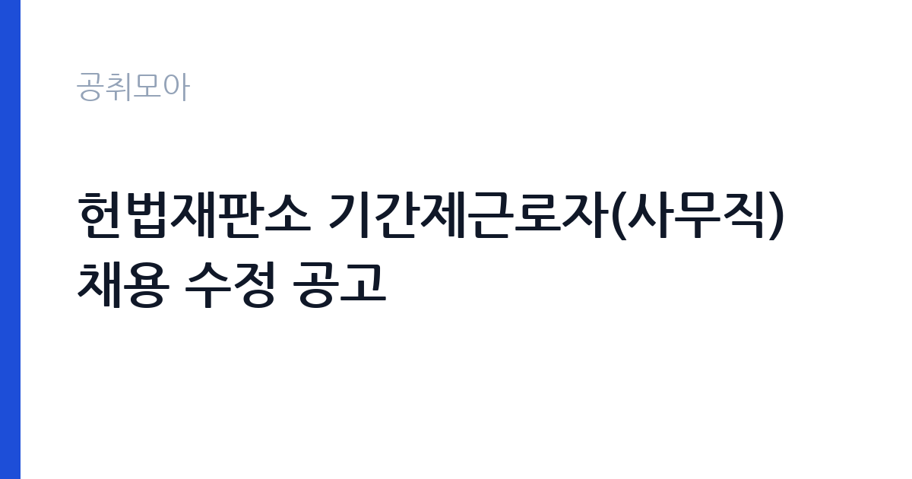

[국가기관] 헌법재판소 기간제근로자(사무직) 채용 수정 공고
헌법재판소 사무처 · 서울 · 마감 2026-11-02 (D-12) · 출처 나라일터

한눈에 보는 모집 조건
| 기관 | 헌법재판소 사무처 |
|---|---|
| 공고명 | 헌법재판소 기간제근로자(사무직) 채용 수정 공고 |
| 고용형태 | 기간제 |
| 근무지 | 서울 |
| 게시일 | 2026-10-21 |
| 마감일 | 2026-11-02 (D-12) |
지원자격, 이렇게 읽으세요
- 기간제근로자 1명
- 접수 ~2026-11-02 마감
- 세부 조건은 원문 공고문 확인
기간제 근로자는 근로계약 기간이 정해진 신분입니다. 계약 기간과 갱신 가능 여부가 근로계약서에 명시되며 기간 만료 시 근로관계가 종료됩니다. 결원 보충이나 특정 사업 기간에 맞춰 채용되는 경우가 많아 업무 범위가 명확합니다. 이번 공고는 헌법재판소 사무처에서 직접 진행하는 자체 전형으로, 응시자격과 제출서류는 공고문에 항목별로 제시됩니다. 행정·사무 직무는 학력과 경력을 함께 보되 실무 경험을 우대하는 경우가 많습니다. 회계 직무는 전산회계나 세무 관련 자격을 우대하고 공공기관 경력자는 가점 대상이 됩니다. 문서 작성 능력과 엑셀 활용 능력은 서류와 면접에서 모두 평가됩니다. 채용 신분이 공무직, 기간제, 임기제 중 무엇인지에 따라 근무 기간과 신분이 달라지므로 먼저 확인해야 합니다. 결격사유 조회는 공통 절차입니다. 서류는 접수 마감 이후 보완이 되지 않으므로 자격 요건과 증빙 서류를 마감 전에 모두 갖춰야 합니다. 공고문에 명시된 우대 사항은 해당 여부를 확인해 증빙을 첨부해야 가점이 반영됩니다. 공고문의 응시자격 표를 보면 자격 항목이 여러 줄로 나뉘어 있으므로, 각 줄을 하나씩 체크하며 본인 해당 여부를 표시해 두면 누락을 줄일 수 있습니다.
이 공고의 포인트
이 공고의 첫 번째 포인트는 고용 형태입니다. 계약 기간이 정해져 있어 근무 종료 시점이 명확합니다. 그만큼 짧은 기간에 어떤 실적을 남길지가 중요해집니다. 두 번째는 업무 범위가 명확하다는 점입니다. 행정·사무 직무로 채용되므로 배치 이후 담당 업무가 크게 흔들리지 않습니다. 세 번째는 근무지입니다. 서울 지역 근무로 접근성은 좋지만 그만큼 지원자가 몰리는 지역이므로 경쟁률을 넉넉히 잡아야 합니다. 재공고로 올라온 공고라 이전 차수 지원자와의 형평성 기준을 확인할 필요가 있습니다. 같은 직무로 함께 올라온 공고 8건 가운데 마감이 중간에 위치하므로 다른 공고와 일정이 겹치는지 확인하십시오. 다만 선발 인원이 1명으로 많지 않아 자격을 갖춘 지원자가 몰리면 경쟁률이 높아질 수 있습니다.
전형은 어떻게 진행되나
전형은 서류심사와 면접심사를 기본으로 하고 직무에 따라 필기나 실기, 체력검정이 추가됩니다. 서류 단계에서는 응시자격 충족 여부와 제출서류 형식을 확인하며 이 단계에서 탈락하는 지원자가 적지 않습니다. 면접은 직무 이해도와 경험을 확인하는 방식으로 진행되고 발표는 개별 통보나 홈페이지 게시로 이뤄집니다. 최종합격 이후에는 결격사유 조회와 채용 신체검사가 이어지며 이 절차에서 문제가 확인되면 합격이 취소될 수 있습니다. 구체적인 전형 단계와 배점은 공고문에 표로 정리되어 있으니 원문을 기준으로 준비하십시오. 제출서류 원본은 최종 단계에서 다시 요구되는 경우가 있어 사본과 함께 보관하십시오.
원문에서 확인한 전형 방식
관련 공고 : 헌법재판소 공고 제2026-29호 26. 10. 16.자 를 아래와 같이 수정 공고합니다. • (당초)4. 응시자격 가. 기본요건 중 "남자의 경우 병역을 필하였거나 면제된 자" → (변경) 삭제 • 응시원서 접수 마감일: (당초) 26. 10. 26.(월) 18:00 → (변경) 26. 11. 2.(월) 18:00 • 면접시험: (당초) 26. 11. 2.(월) 예정 → (변경) 26. 11. 9.(월) 14:00 예정 • 면접합격자 발표: (당초) 26. 11월 초순 → (변경) 26. 11월 중순 • 채용예정일: (당초) 26. 11월 초중순 → (변경) 26. 11월 중순 * 접수기간 변경 전 제출한 응시원서는 유효하므로 별도 재접수할 필요 없음 문화와 예술의 마을에 자리한 대한민국 헌법재판소에서 붙임과 같이 인력을 채용하고자 하오니 성실하고 역량 있는 분들의 많은 지원을 바랍니다. 2026년 10월 21일 헌법재판소사무처장
이런 분께 추천해요
- 문서 작성과 엑셀 활용이 능숙한 분
- 여러 업무를 동시에 정리할 수 있는 분
- 회계·예산 실무 경험이 있는 분
지원 전 체크리스트
- 응시자격 요건과 경력 기준을 충족하는가 — 경력은 증명서로 입증해야 합니다
- 계약 기간과 근무 시작일·종료일을 확인했는가
- 제출서류 목록을 모두 준비했는가 — 누락 시 서류 단계에서 탈락합니다
- 접수 마감 2026-11-02 이전에 접수 방식을 확인해 제출했는가
모집 일정과 제출 타이밍
2026-10-21에 공고가 올라왔고 접수는 2026-11-02까지입니다. 남은 기간은 12일이며, 이 기간에 자격증 사본과 경력증명서, 주민등록등본 같은 기본 서류를 모두 준비해야 합니다. 경력증명서는 발급에 며칠이 걸리는 경우가 있으니 가장 먼저 신청하십시오. 접수는 온라인과 우편·방문으로 나뉘는 경우가 많고, 우편 접수는 도착 기준으로 판정되므로 마감일 소인만 믿으면 안 됩니다. 면접 일정은 서류 발표 후 개별 통보되므로 제출 후에도 연락을 받을 수 있도록 유지해야 합니다. 서류 발표일과 면접일 사이가 짧은 경우가 많아 면접 준비는 접수와 동시에 시작하는 편이 좋습니다. 서울 근무지는 대중교통 접근성이 좋은 대신 주차와 통근 시간이 변수입니다. 출퇴근 경로를 미리 확인하십시오. 마감까지 2주 안팎이 있어 준비할 시간은 있지만 미루면 촉박해집니다. 선발 인원이 한두 명 수준이라 지원자 개개인의 서류 완성도가 그대로 평가에 반영됩니다.
직무 이해하기: 국가기관
법무·사법 기관은 재판과 송무, 수사, 교정 업무를 담당합니다. 법원행정처와 각급 법원은 재판 지원과 등기, 가족관계 업무를 운영하며, 법무부는 출입국과 보호, 교정 시설을 관리합니다. 보안과 비밀 유지 요건이 다른 기관보다 엄격합니다. 행정·사무 업무는 부서 운영을 지원하는 실무 전반을 맡습니다. 문서 작성과 결재 처리, 예산 집행과 정산, 물품 구매와 자산 관리가 기본 업무입니다. 민원 응대와 전화 안내, 회의 준비와 기록도 일상적으로 발생합니다. 회계 업무가 붙으면 지출 증빙 검토와 세금 계산서 처리, 결산 자료 작성까지 포함됩니다. 업무가 여러 갈래로 동시에 들어오기 때문에 우선순위 관리가 실력의 핵심입니다. 업무는 혼자 처리하기보다 부서 단위로 나눠 진행되므로 담당 구역과 협업 범위를 입사 초에 확인하는 것이 중요합니다. 현장 업무와 사무 업무의 비중은 기관의 사업 일정에 따라 계절별로 달라집니다.
자기소개서 작성 팁
행정·사무 지원서는 실무 경험을 업무 단위로 정리하는 것이 효과적입니다. 담당했던 문서 종류와 처리 건수, 예산 규모, 개선한 절차를 구체적으로 쓰십시오. 반복 업무를 자동화하거나 서식을 개선한 경험은 강한 소재입니다. 정확성과 마감 준수를 보여주는 사례를 반드시 한 개 이상 넣으십시오. 직무 경험이 많지 않다면 경험의 양보다 과정을 구체적으로 쓰는 편이 낫습니다. 어떤 상황에서 무엇을 판단했고 어떤 결과가 나왔는지 순서대로 서술하면 신뢰가 생깁니다. 지원 동기와 기여 방안은 한 문단씩 짧게 유지하고, 가장 자신 있는 경험에 분량을 몰아주십시오. 마지막 문장은 포부보다 구체적인 실행 계획으로 끝내는 것이 좋습니다.
면접 준비 포인트
면접에서는 업무 처리 방식과 정확성을 확인합니다. 마감이 겹치는 업무를 어떻게 정리할지, 상급자 지시가 여러 갈래로 들어올 때 어떻게 처리할지 묻습니다. 회계 업무라면 증빙이 맞지 않을 때 어떻게 대응하는지가 핵심 질문입니다. 엑셀 함수 활용이나 문서 작성 경험을 구체적으로 답하면 신뢰를 줍니다. 답변은 상황, 판단, 조치의 순서로 정리하면 전달이 분명해집니다. 모르는 질문에는 모른다고 밝히고 확인 방법을 제시하는 편이 억지 답변보다 낫습니다. 마지막에는 근무 의사와 함께 2026-11-02 이후 일정에 언제든 응할 수 있다는 점을 전달하십시오. 면접은 공고문에 적힌 직무 내용을 얼마나 이해하고 있는지 확인하는 질문으로 시작하는 경우가 많으니, 모집분야 문구를 그대로 읽어 두는 것이 도움이 됩니다.
급여·근무조건 읽는 법
행정·사무 직무의 보수는 채용 신분에 따라 달라집니다. 공무직은 기관 임금표의 기본급에 정액급식비·명절휴가비·복지포인트가 더해지고, 기간제는 계약 기간과 월급이 명시됩니다. 임기제공무원은 연봉등급제를 적용받습니다. 2026년 최저임금은 시급 10,320원, 월 환산 2,156,880원(209시간 기준)이므로 최소 기준선으로 확인하십시오. 초과근무수당과 정근수당 포함 여부에 따라 실수령액이 달라지므로 원문 처우표를 보셔야 합니다. 2026년 적용 최저임금은 시급 10,320원, 월 환산 2,156,880원(주 40시간·209시간 기준)입니다. 고용노동부 고시 제2025-47호로 확정된 금액입니다. 보수는 보통 기본급, 각종 수당, 상여로 나뉘어 지급됩니다. 기본급만 보면 적어 보여도 정액급식비와 명절휴가비, 복지포인트가 붙으면 실제 총액이 달라지므로 항목별로 확인해야 합니다. 4대 보험과 퇴직급여 적용 여부도 함께 보십시오. 기간제는 계약 기간이 짧아 월 급여가 높아도 연간 총액은 적을 수 있습니다.
자주 묻는 질문
- 선발 인원은 몇 명인가요?
공고문 기준 1명입니다. 직종별로 인원이 나뉘는 경우가 있으니 모집분야 항목을 함께 확인하십시오. - 근무지는 어디인가요?
서울 지역의 헌법재판소 사무처 소속 근무지입니다. 세부 주소와 출퇴근 조건은 원문 공고문에서 확인할 수 있습니다. - 보수는 얼마인가요?
채용 신분(기간제)과 기관 임금 규정에 따라 정해지며 구체적인 금액은 공고문 처우 항목에 제시됩니다. 금액이 공개되지 않은 경우에는 원문의 보수표를 확인하십시오.
함께 보면 좋은 공고
[국가기관] 2026년 남부지방산림청 제3차 공무직근로자(산불재난특수진화대원) 채용 공고 — 마감 2026-10-29[국가기관] 대전지방공소청 2026년 제1회 공무직근로자(사무원) 채용시험 시행계획 공고 — 마감 2026-10-30[국가기관] 2026년도 제1회 용인우체국 공무직 우체국소포원 채용 공고 — 마감 2026-10-30출처: 나라일터 공개정보를 바탕으로 공취모아가 정리한 안내글입니다. 모집 조건·일정은 변경될 수 있으니 지원 전 반드시 원문 공고문을 확인하세요. 본 글은 정보 제공용이며 합격을 보장하지 않습니다.